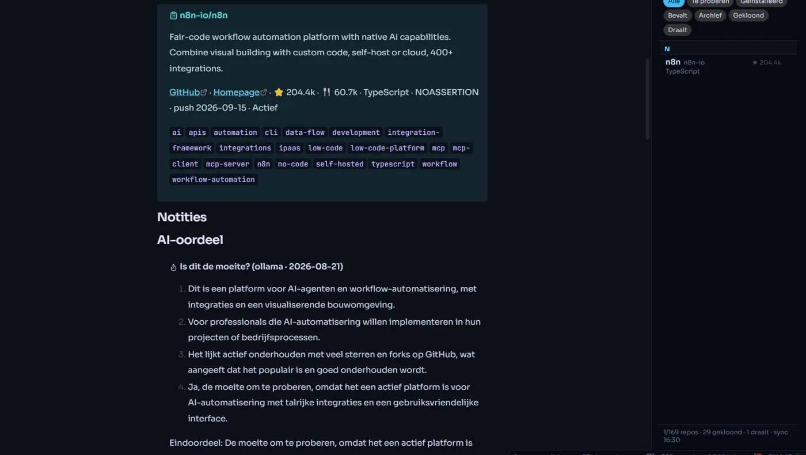
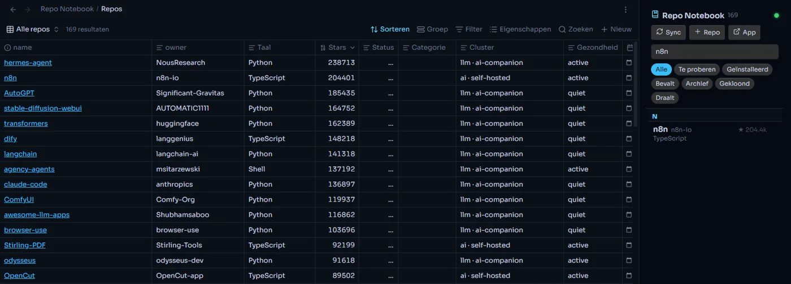
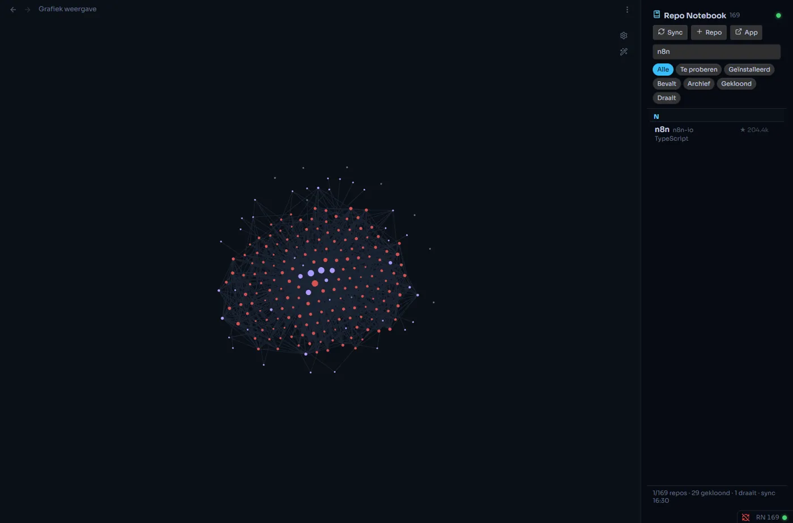
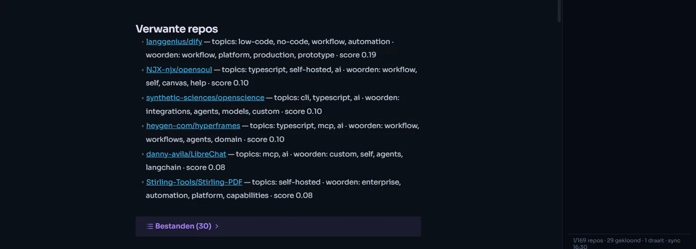

Your repos.
Inside your vault.
Every GitHub repo you save in Repo Notebook becomes a note in Obsidian. Related repos become wikilinks, graph view becomes your repo map, and your status and notes sync both ways.

01 / THE PLUGIN IN OBSIDIAN — REAL PRODUCT CAPTURE
One plain Markdown note per repository.
No database you can't read. Each repo is a regular note in your vault, so it works with your search, tags, links and templates.
- Frontmatter: stars, language, topics, status, cluster, health
- Summary callout with GitHub and homepage links
- Your own Notes section, never overwritten
- The AI verdict from the app
- Top-level files and the README

Related repos become wikilinks. Graph view does the rest.
The same graph engine that draws the map in Repo Notebook decides which
repos belong together, and tells you why. In Obsidian those links are real
[[wikilinks]], so graph view shows your whole collection.
Example collection shown in the screenshots


Open a repo note. Scroll. Zoom out to the map.
Change it in Obsidian. The app knows a second later.
Status, category and notes flow back to Repo Notebook about 1.5 seconds after you edit them, and new repos from the app show up in your vault on their own. The rule is simple: what is between the markers is yours.
- Your notes are never overwritten
- Removed repos are flagged, not deleted
- Only notes that actually changed are rewritten
- Reading, syncing and adding repos work with the app closed
- Clone, install, start and stop from the side panel
--- repo: n8n-io/n8n status: todo cluster: ai · self-hosted tags: [repo-notebook, repo/taal/typescript] --- > [!abstract] n8n-io/n8n > Fair-code workflow automation platform… ## Notities <!-- rn:notes --> Try this for the lead follow-up flow. <!-- /rn:notes --> ## Verwante repos - [[langgenius/dify]] — topics: workflow, automation
Three steps with BRAT.
- Install BRAT from Obsidian's community plugins (full name "Obsidian42 - BRAT").
- In BRAT's settings choose Add beta plugin and paste
TMSHuybrechts/obsidian-repo-notebook - Enable Repo Notebook under Settings → Community plugins. BRAT keeps it up to date.
Your notes live in Obsidian.
Now your repos do too.
What you know about a repository belongs next to the rest of your knowledge: searchable, linkable and yours, without keeping two places in sync by hand.